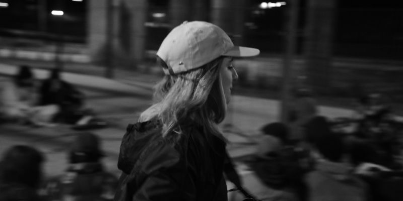

Un poco sobre mi...
Hola! Soy Amparo Apilánez, argentina viviendo en España, licenciada en Ciencias de la Comunicación y curiosa por naturaleza. Me interesa explorar las distintas formas de expresión,...leer más
PORFOLIO 2026

comunicación social - fotografía - producción - edición - desarrollo web
Hola! Soy Amparo Apilánez, argentina viviendo en España, licenciada en Ciencias de la Comunicación y curiosa por naturaleza. Me interesa explorar las distintas formas de expresión,...leer más
Soy licenciada en Comunicación Social. Trabajo con imágenes, historias y proyectos, y actualmente exploro el desarrollo web como un nuevo lenguaje creativo.

Narrativas visuales.

Imagen y sonido en movimiento.

Ideas hechas experiencias.

Nuevas formas de crear.